Netflix è una della piattaforme di streaming più utilizzate, contando oltre 214 milioni di account.
La piattaforma si avvale di uno dei più efficaci sistemi di raccomandazioni, proponendo sulla home di ogni utente i film e le serie TV
più popolari e conformi alle preferenze dell'abbonato.
Un punto in comune tra tutti gli account è la "Top 10 settimanale" che appare
in cima alla homepage e che viene aggiornata ogni domenica. Milioni di persone ogni giorno vedono questa lista di dieci film o serie tv, che influenza
invevitabilmente la scelta degli utenti. Inoltre, si tratta di una vetrina di inestimabile valore per ogni attore e regista, emergente o di successo.
Netflix calcola la "Top 10 settimanale" semplicemente ordinando i film o delle serie TV per ore viste negli ultimi 7 giorni in ordine decrescente.
Ma questa classifica tende effettivamente a premiare i titoli di maggiore qualità o i più popolari?
Film e serie TV vengono trattate allo stesso modo?
La Top 10 è effettivamente utile agli utenti per scegliere i migliori titoli o propone prodotti di
scarsa qualità rispetto a ciò che è nel catalogo Netflix?
L'obiettivo di questa ricerca è analizzare i dati relativi ad ogni film e serie TV finito in Top 10 negli ultimi sei mesi per
rispondere a queste domande di ricerca.
Le seguenti visualizzazioni sono state ottenute utilizzando ed unendo due dataset indipendenti provenienti da due fonti differenti:
Il dataset principale che è stato utilizzato è un insieme di dati fornito da Netflix che contiene i 10 migliori film e serie TV per ogni settimana. La Top 10 viene calcolata da Netflix ordinando i film per numero di ore viste. Le Top 10 settimanali contenute in questo dataset vanno dal 04/07/2021 al 12/12/2021. Questo insieme di dati è stato messo a disposizione proprio da Netflix nel Novembre 2021, ed è possibile consultarlo alla pagina Netflix Top 10.
Col fine di ottenere informazioni aggiuntive sui film presenti nelle Top 10 di Netflix, sono stati utilizzati diversi datasets forniti da IMDb, contenenti genere, attori, regista e molte altri attibuti su ogni titolo considerato.
I due dataset, ottenuti attraverso download ed arricchiti estraendo dati utilizzando API e tecniche di web scraping, sono stati uniti tramite
accopiando i titoli, l'anno e la tipologia (film o serie TV).
Inoltre, è proprio da questo insieme di dati che è stato ricavata la metrica di qualità, indicante la bontà di ogni prodotto su Netflix: per ogni titolo si ha un voto
degli utenti (Rating IMDb) e dei critici (utenti verificati su RottenTomatoes e/o Metacritic), ed assumono valori che vanno da 0 a 10.
Il seguente grafico a dispersione mostra, per ogni film e Serie TV, il valore di ore di visualizzazione e la valutazione media degli utenti su IMDb. Ognuno dei titoli visualizzati è apparso almeno
una volta nelle Top 10 di Netflix. Vi è un'evidente relazione non lineare tra la quantità di ore viste su Netflix e la valutazione media
su IMDb. In media, all'aumentare dell'1% del numero di ore viste il voto medio aumenta di circa 0,67.
È inoltre fondamentale sottolineare l'evidente differenza del numero di ore di ore di visualizzazione medio fra film e serie TV, dovuto soprattutto alla maggiore durata delle serie. Ciò comporta
che nella Top 10 le serie TV finiscono molto più facilmente ai primi posti, non perchè siano viste da più persone o siano più apprezzate, ma semplicemente per la loro maggior durata.
Nel grafico occupante la parte alta della dashboard vengono visualizzate sia le serie TV che i film finiti in Top 10. Calcolando una linea di tendenza, si nota che al crescere del logaritmo delle ore di Visualizzazione
aumenta la valutazione media. Tuttavia questa è una correlazione a blocchi, un caso di falsa correlazione (così come la più famosa correlazione spuria).
Dividendo i due tipi di titoli, si nota come la linea di tendenza nei film sia sostanzialmente orizzontale, indicando un'assenza di correlazione tra le due variabili per questo tipo di titolo.
Le due linee orizzontali indicanti la media dei ratings dei film e le serie TV sono state calcolate considerando tutti i film e le serie TV presenti sul catalogo Netflix, non solamente i titoli finiti in Top 10.
Per verificare se la Top 10 Netflix offra effettivamente dei contenuti di qualità ai suoi utenti è stata confrontata questa classifica con quella ottenuta utilizzando i voti dell'audience e dei critici. Oltre alla Top 10 settimanale di Netlix, sono state calcolate le Top 10 settimanali per gli utenti e per la critica, ordinando i 10 titoli più visti in base al loro voto su IMDb, RottenTomatoes e Metacritic. Un alto valore di correlazione indica una forte similarità tra le posizioni in classifica: gli stessi film vengono messi negli stessi posti in classifica da Netflix, utenti e critici. Viceversa, un valore di correlazione fortemente negativo indica una forte discordanza tra la Top 10 basata sulle ore e la Top 10 basata sui voti degli utenti o della critica.
Nel seguente grafico a dispersione, per ogni attore o regista, viene visualizzato il voto medio di tutti i titoli della loro carriera ed il voto medio dei titoli
nella Top 10 di Netflix. Tra tutti gli attori, vengono considerati solo coloro che hanno recitato almeno in 20 film in carriera e sono finiti in Top 10 con almeno due film differenti.
Per gli attori dei film è interessante notare come la maggior parte si trovino al di sotto della bisettrice, indicando che sono finiti in Top 10
con film considerati di qualità peggiore rispetto alla qualità media dei loro film.
Si può dunque affermare che la maggiorparte degli attori viene pubblicizzata sulla Top10 con film di minor qualità rispetto ai loro "standard".
La situazione non è così marcata per gli attori di serie TV, anzi, in molti hanno una media maggiore su Netflix rispetto alla media generale della loro carriera.
Le conclusioni sono molto simili anche per i registi. I film che finiscono sulla top 10 di Netflix sono solitamente di minor qualità rispetto alle opere realizzate in carriera.
Ritornando alle domande che ci siamo posti all'inizio possiamo concludere che nel caso delle serie TV c'è una correlazione, seppur lenta (logaritmica), tra la qualità di queste ultime e le ore
visualizzate, ciò non si verifica per i film.
E' inoltre importante ricordare che Netflix propone anche una classifica mista tra film e serie TV.
Questa classifica risulta distorta a causa della maggiore durata delle serie TV, è perciò più facile che una di queste finisca in Top 10.
A maggior supporto della tesi per cui Netflix sia più adatta alle serie TV che ai film viene incontro la terza visualizzazione,
dove è chiaro che sia per gli attori che per i registi di film finiscono in Top 10 i titoli con voti medi al di sotto dei loro standard.
Se lo scopo è farsi conoscere per i lavori migliori, Netflix non è dunque la piattaforma più adatta. Ma se invece lo scopo è proprio quello
di dare popolarità ai lavori "peggiori" per trarne una forma di guadagno, allora il discorso cambia. Per questo motivo questa ricerca può essere
considerata come una lista di consigli pratici per i professionisti del settore televisivo/cinematografico e un monito per i semplici utenti che
vogliono iscriversi a Netflix e usufruire dei suoi contenuti.
Col fine di valutare la qualità ed identificare i difetti delle visualizzazioni sono state adottate le seguenti metodologie:
La valutazione euristica che ha permesso di individuare le problematiche relative alla tre visualizzazioni presentate.
Il test utente che ha permesso di valutare l’efficacia (misurando il tempo necessario per eseguire un determinato compito) e l’efficienza (considerando i compiti eseguiti con successo) delle tre visualizzazioni.
Il questionario psicometrico, per verificare come gli utenti hanno percepito le visualizzazioni sotto diversi punti di vista.
La valutazione euristica ha coinvolto tre utenti ai quali è stato chiesto di interagire liberamente per qualche minuto con le dashboard e i grafici, commentando a voce alta il proprio operato ed il modo in cui utilizzano le visualizzazioni. Interpretando i comportamenti e commenti degli utenti, sono state individuate alcune problematiche relative ai vari grafici. Le visualizzazioni presentate ai tre utenti precendentemente si mostravano in questo modo:
Prima visualizzazione, Confronto tra ore viste e Rating IMDb.
Seconda visualizzazione, correlogramma tra le tre classifiche:
Terza visualizzazione, grafico a dispersione su attori e registi:
Dopo aver interagito con le tre visualizzazioni, i tre utenti hanno palesato le seguenti problematiche:
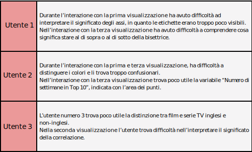Le visualizzazioni riportate nella sezione principale sono le versioni finali, ottenute dopo aver applicato i consigli dati dagli utenti e risolto i vari bug (tutti gli utenti hanno riportato di non riuscire a selezionare alcuni punti nei grafici a dispersione) e problemi di usabilità.
Dopo aver risolto le problematiche riscontrate nella valutazione euristica, sei
soggetti sono stati sottoposti ai test utente. Durante i test, quattro compiti (task) sono stati somministrati agli utenti; misurando
il tempo di esecuzione del task è stata valutata l’efficienza, considerando il numero di task
portati a termine è stata valutata l’efficacia delle visualizzazioni. Ad ogni utente è stata data la possibilità di richiedere un aiuto per ogni compito.
I quattro task scelti sono riportati nella seguente tabella:
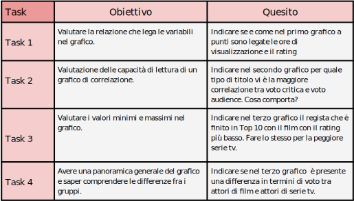
Nella tabella in basso sono riportati i secondi che ogni utente ha impiegato per completare ogni task. Le caselle in verde indicano che il soggetto ha
completato il task con successo senza aiuti, le celle in giallo indicano che il soggetto ha completato con successso il task, ma richiedendo un aiuto. Infine, le caselle in rosso
indicano che l'utente non ha risposto correttamente alle domande poste.
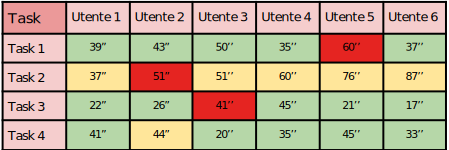
Nella seguente tabella è riportato il tempo di completamento medio e mediano per ogni task. 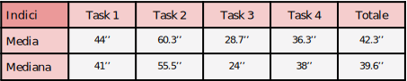
Infine, nel sottostante violin plot sono visualizzati i dati riportati nella prima tabella relativa ai test utente. 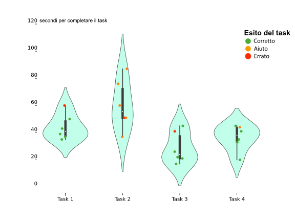
Il terzo ed il quarto task sono risultati essere i compiti in media più semplici per gli utenti. Entrambi i task sono relativi alla terza visualizzazione. Il secondo task, che richiedeva all'utente di comprendere il correlogramma, è stato di gran lunga il più complesso per i sei user. Nessuno è riuscito a completarlo senza richiedere un aiuto ed è il task con il tempo di completamento medio e mediano più elevato.
Il terzo ed ultimo passaggio necessario per completare le valutazioni di qualità è la creazione e la compilazione dei questionari psicometrici, utilizzati per valutare la qualità delle visualizzazioni utilizzando la Cabitza-Locoro Scale. Questo strumento di valutazione è composto da due sezioni. Nella prima sezione l’utente deve valutare la qualità dell’infografica attribuendo un valore su un continuum che va da "1" (pochissimo) a "6" (moltissimo) per ciascuno dei seguenti aggettivi:
Utile;
Chiara;
Informativa;
Bella;
Intuitiva.
Nella seconda sezione viene richiesto all’utente di valutare, su un continuum che va da "1" (bassissimo) a "6" (altissimo), il valore complessivo percepito delle visualizzazioni. Il questionario è stato somministrato a 24 utenti. I risultati del questionario sono stati analizzati e riassunti tramite due tipologie di grafico: il divergent stacked bar chart e il correlogramma, per controllare la correlazione tra i vari aggettivi ed il valore complessivo della visualizzazione. Nel divergent stacked bar chart, la posizione della "bolla" indica, tra i voti intermedi, se la proporzione dei "4" è maggiore dei "3" o viceversa. La grandezza della "bolla" indica l'incertezza relativa alla sua posizione. L'incertezza, calcolata stimando l'intervallo di confidenza (con un livello di confidenza pari a 0.95), è proporzionale alla larghezza della banda.
Nella seguente tabella sono riportati i risultati dei 24 test psicometrici relativi alla prima visualizzazione (scatterplot sul confronto tra ore di visualizzazione e rating IMDb):
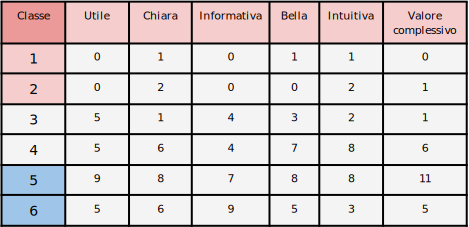 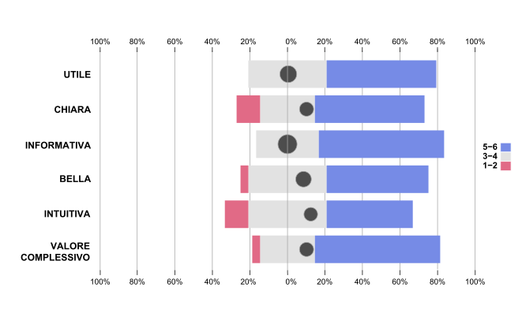Si può notare come i risultati siano molo soddisfacenti, con addirittura alcuni classi ("utile" e "informativa") senza alcun negativo ("1" o "2"). La maggior parte dei valori centrali tendono verso il "4" piuttosto che il "3".
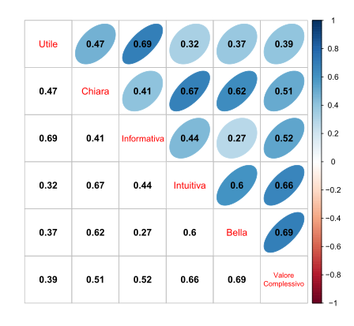Relativamente agli aggettivi, le maggiori correlazioni si evidenziano tra "utile" e "informativa" (0.69), "chiara" e "intuitiva"(0.67) e "bella" e "chiara"(0.62). Gli aggettivi maggiormente correlati al valore complessivo sono "bella" ed "intuitiva".
Nella seconda tabella sono riportati i risultati dei 24 test psicometrici relativi alla seconda visualizzazione, ovvero il correlogramma:
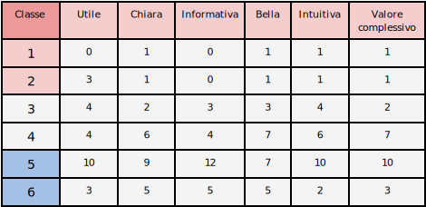 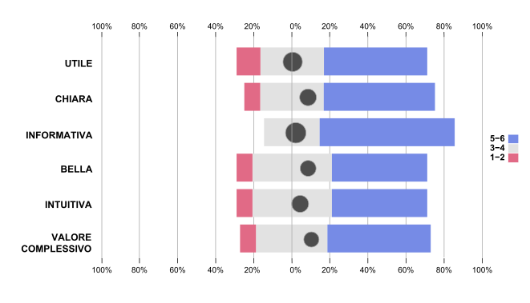Per i 24 utenti, il correlogramma è risultato molto informativo, così come per la prima visualizzazione, ma riporta valori inferiori in "utile" e nel "valore complessivo". Sicuramente la scelta di questo tipo di visualizzazione crea più difficoltà ad un utente non esperto e che non conosce bene il concetto di correlazione.
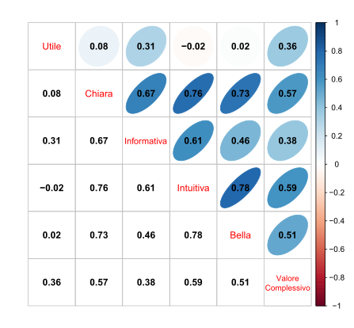In questo caso si evidenziano correlazioni più alte tra gli aggettivi "chiara" ed "intuitiva" (0.73), "chiara" e "bella"(0.73) ed "intuitiva" e "bella" (0.78). L'aggettivo maggiormente correlato al "valore complessivo" è "intuitiva".
Infine, lo stesso questionario è stato utilizzato anche per la terza visualizzazione:
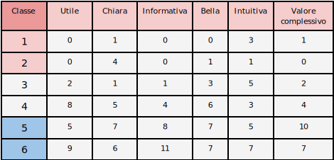 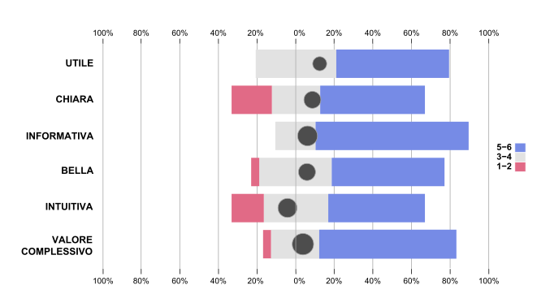I risultati dei test sul terzo grafico sono molto simili ai risultati del primo grafico, con un assenza di punteggi negativi per "utile" ed "informativa". Anche in questo caso, sui punteggi incerti ("3-4") si evidenzia una maggior proporzione di "4" rispetto ai "3".
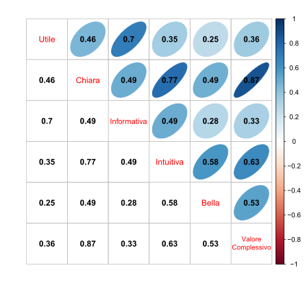Tra gli aggettivi è presente una forte correlazione tra i punteggi di "chiara" ed "intuitiva" (0.77) ed "utile" ed "intuitiva" (0.7). Inoltre, si evidenzia una forte correlazione tra la chiarezza della visualizzazione ed il suo valore complessivo (0.87).